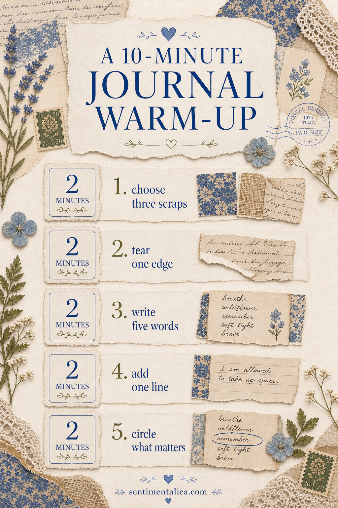
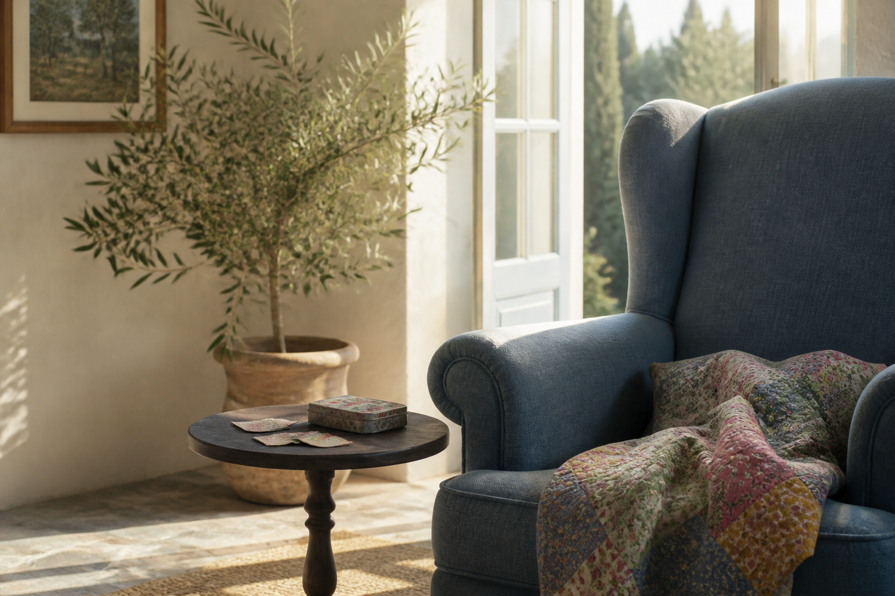

Creative block often grows when the first choice feels too important. This ten-minute warm-up makes every decision deliberately small. You are not finishing a masterpiece; you are giving your hands enough motion for curiosity to return.

Minutes one to two: notice
Choose three things already near you: a color, a texture, and a word. They might be the green of a cup, the weave of a napkin, and a word from an envelope. Write them at the top of a scrap. This is your temporary direction.
Minutes three to five: gather and tear
Find three papers that echo only one of those observations. Tear each into a different scale: one palm-sized piece, one narrow strip, and one tiny shape. Place the largest piece off-center and let the other two touch it.

Minutes six to eight: make one mark
Add a single repeated mark across two layers. Try short pencil lines, three ink dots, a stitched dash, or one stamped word. Repetition creates connection quickly and stops the page from feeling like unrelated scraps.
Minutes nine to ten: write one honest sentence
Complete this line: “Today I keep noticing…” Write for the remaining time without correcting it. The sentence can stay visible, fold beneath a flap, or be covered later. Its job is to move the page from decoration into memory.
Stop when the timer ends, even if the composition feels unfinished. Photograph it, close the journal, and return later. Ending with a little energy left makes tomorrow's beginning easier—and that is the real purpose of a warm-up.